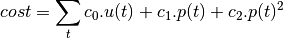
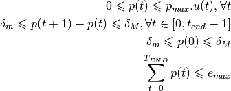
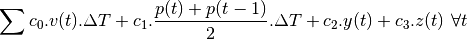
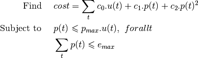

lms2.electric package¶
Submodules¶
lms2.electric.batteries module¶
-
class
lms2.electric.batteries.Battery(*args, time=None, emin=0, emax=30, pcmax=None, pdmax=None, e0=None, ef=None, etac=1.0, etad=1.0, **kwds)[source]¶ Bases:
lms2.core.units.DynUnitSimple Battery
lms2.electric.maingrids module¶
-
class
lms2.electric.maingrids.MainGrid2(time, *args, pmax=None, pmin=None, cout=None, cin=None, interpolate=True, kind='linear', fill_value='extrapolate', **kwgs)[source]¶ Bases:
lms2.core.units.DynUnitSimple main Grid unit
lms2.electric.sources module¶
-
class
lms2.electric.sources.PowerLoad(*args, time=None, flow=None, flow_name='p', **kwds)[source]¶ Bases:
lms2.base.base_units.FlowLoadSimple Power Load.
-
class
lms2.electric.sources.PowerSource(*args, time=None, profile=None, flow_name='p', **kwds)[source]¶ Bases:
lms2.base.base_units.FlowSourceSimple Power Source.
-
class
lms2.electric.sources.PvPanelsWSurface(*args, time=None, profile=None, flow_name='p', **kwds)[source]¶ Bases:
lms2.electric.sources.PowerSourcePV panels with parametric surface
-
class
lms2.electric.sources.WindTurbine(*args, time=None, profile=None, flow_name='p', **kwds)[source]¶ Bases:
lms2.electric.sources.PowerSourceSimple wind turbine with fixed power profile
lms2.electric.test_electric module¶
-
class
lms2.electric.test_electric.BatteriesTests(methodName='runTest')[source]¶ Bases:
unittest.case.TestCaseTesting Batteries Modules
lms2.electric.turbines module¶
This module contains the thermal power plants
-
class
lms2.electric.turbines.LimitedThermalUnit[source]¶ Bases:
lms2.electric.turbines.SimpleThermalUnitThermal power Unit with limited variation
This model, based on SimpleThermalUnit model, implement a output power variation constraint. The cost function is quadratic but can be linearized thanks to the utils.LinQExp function
Minimize:

s.t. :

-
class
lms2.electric.turbines.LimitedThermalUnit2[source]¶ Bases:
objectThermal power Unit with variation and start-up/shut-down constraints
This model, based on the Unit model, implement a output power variation constraint, and a start-up/shut-down trajectories constraintes. The cost function is linear.
- Variables :
- p : instant power of the unit (kW)
- v : binary variable 1:working, 0:shutoff
- y : binary variable 1:start-up
- z : binary variable 1:shut-down
- sy : binary variable 1:start-up phase
- sz : binary variable 1:shut-down phase
- ud : starting-up duration (h)
- dd : shutting down duration (h)
- pu : pre-specified power output in startingup period (kW)
- pd : pre-specified power output in shoutdown period (kW)
- pmax : maximal instantaneous power of the unit (kW)
- pmin : minimal instantaneous power of the unit (kW)
- c = [c0, c1, c2, c3]: the constant, the linear costs, and the start-up and shut down costs (euro/h, euro/(kW.h), euro/h, euro/h)
- deltaM : maximal variation power (kW/h)
- deltam : minimal variation power (kW/h)
Model
Minimize:

s.t. :
![y(t) - z(t) &= v(t) - v(t-1) \forall t \\
z(t) + y(t) &\leqslant 1 \forall t \\
sy(t) &= \sum_{i=0}^{UD} y(t-i) \forall t \\
sz(t) &= \sum_{i=0}^{DD} z(t+i+1) \forall t \\
v(t) &\geqslant sz(t) \forall t \\
v(t) &\geqslant sy(t) \forall t \\
p(t) &\geqslant p_{min}.\left(v(t) - sz(t) - sy(t)\right) + \sum_{i=0}^{UD} pu(i).y(t-i) \forall t \\
p(t) &\geqslant p_{min}.\left(v(t) - sz(t) - sy(t)\right) + \sum_{i=0}^{DD} pd(i).z(t+i+1) \forall t \\
p(t) &\leqslant p_{max}.\left(v(t) - sy(t)\right) + \sum_{i=0}^{UD} pu(i).y(t-1) \forall t \\
p(t) &\leqslant p_{max}.\left(v(t) - sz(t)\right) + \sum_{i=0}^{DD} pd(i).z(t+i+1) \forall t \\
\frac{p(t)-p(t-1)}{\delta t} &\leqslant p_{max}.sy(t) + \delta M.\left(v(t) - sy(t)\right) \forall t \\
\frac{p(t-1)-p(t)}{\delta t} &\leqslant p_{max}.sz(t-1) + \delta m \forall t \\](_images/math/780d1a17be23cae5942327e6823c398a6473501a.png)
-
class
lms2.electric.turbines.SimpleThermalUnit[source]¶ Bases:
objectSimple thermal power Unit

# Example :: # >>> from llmse.core.timehorizon import Time # >>> from llmse.electric.thermalunits import SimpleThermalUnit # >>> th = Time(start=0, end=20, freq=1) # >>> STU1 = SimpleThermalUnit(th, name=’STU1’, c=[45, 0.12, 0]) #